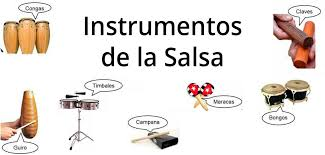

Percusión •
Bongó •
Campana •
Clave•
Cencerro•
Conga•
Güiro•
Maracas•
Timbal•
Viento•
Flauta•
Trompeta•
Trombón•
Saxófono o saxofón•
Clarinete•
Cuerda•
Bajo o Contrabajo (dependiendo de la orquesta)•
Piano•
Grandes Orquestas de la salsa
instruemntos de la salsa

La salsa es un género musical bailable resultante de la síntesis
del son cubano y otros géneros de música caribeña, con el jazz y
otros ritmos estadounidenses. La salsa fue consolidada como un éxito
comercial por músicos de origen puertorriqueño en la ciudad de Nueva York
en la década de 1960,3 si bien sus raíces se remontan a décadas anteriores
en países de la cuenca del Caribe.4 La salsa finalmente se extendió
a lo largo de Colombia5 y al resto de América, dando lugar a escenas
regionales puertorriqueña, panameña, venezolana, cubana, dominicana, colombiana
y de otros países de América Latina. La salsa abarca varios estilos como la salsa dura,
la salsa romántica y la timba.
Todos ellos son instrumentos para tocar salsa. ¿Eres músico o estás aprendiendo?
Cuéntanos tu historia con un comentario.